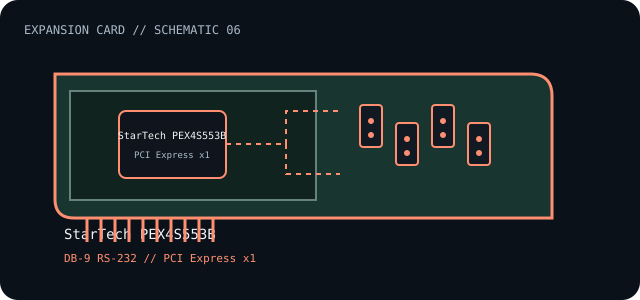

[ INDIVIDUAL COMPONENT // EXPANSION CARDS ]
StarTech PEX4S553B
Four-port PCI Express RS-232 serial card supplied with breakout cable. This is a model-specific catalog entry; confirm the exact label and revision before use.

IDENTIFICATION: Match the full model/part number and board revision to the label. Port and bus information below is included only where the linked manufacturer or standards documentation supports it; revisions and platform support may differ.
Specifications and service checks
| Catalog subcategory | Serial-port cards |
|---|---|
| Exact model / part identifier | PEX4S553B |
| Bus / host interface | PCI Express x1 |
| Verified interfaces / protocols | Four DB-9 RS-232 ports through the supplied breakout cable; maximum baud rate 230.4 Kbps per the product documentation. RS-422/485 is not supported. |
| OS / driver / firmware caveat | Use a StarTech driver for the exact operating-system release; the product is discontinued and replaced by PEX4S953LP. The replacement is not the same model and should not be assumed electrically identical. |
| Service note | Keep the breakout cable with the card and label each port. Inspect the cable and connector before use; never substitute an RS-422/485 serial cable or assume the unsupported electrical standard. |
Installation and archival notes
- Record the board model, revision, serial/date code, firmware, bracket, accessories, and the documentation revision used to identify the unit.
- Confirm the host slot's electrical wiring/keying, required power, supported OS/driver, and any platform or option-ROM restriction in the cited model documentation.
- Use ESD precautions. Do not infer pinout, compatibility, protocol, boot support, or revision equivalence from a similar connector or product-family name.
Keep the breakout cable with the card and label each port. Inspect the cable and connector before use; never substitute an RS-422/485 serial cable or assume the unsupported electrical standard.
Model-specific sources
- StarTech.com — PEX4S553B product and specificationsExact MPN, four RS-232 ports, PCIe host and product lifecycle notice.
- StarTech.com — PEX4S553B user manualPort breakout, installation and supported serial standard.
Source links are selected for this exact model or its manufacturer-documented family. Review the source revision and your card's printed identifiers before service.